Javato
Defensa | Dorsal 16
Javato, con el dorsal 16 a la espalda. Se trata de un jugador brillante, capaz de deslumbrar al
rival con su tono de piel, que cambia cuál camaleón al amarillo en cuanto toca un canuto. Gracias a
su constante compromiso con la iglesia, y tras 99.999 rosarios rezados, se le ha otorgado una
habilidad especial: remate celestial.
Lateral izquierdo porque es zurdo, ya que tapa menos que un tanga. Es una versión experimental fallida de Lionel Messi, si en vez de hormona del crecimiento se hubiese metido fentanilo. Eso si, destacar su habilidad para levantar el balón del suelo desde hace ya 2 temporada
Su buen comportamiento dentro del campo y capacidad de perdonar a los rivales es innegable, sin embargo, cuando sale de fiesta NO perdona una. Puede zorrearle a una yonky de 60 años en Praga o a una negra con su novio de dos metros al lado, dos horas después de haberse confesado en misa, se la pela.
Siempre le decimos que es un “coco”, y eso es porque tiene una telilla blanca que le permite sacarse 2 carreras y tocar 28 instrumentos a la vez, pero se buguea y empieza a golpearse la cabeza repetidamente cuando pierde una partida al ajedrez.
A pesar de todo ello, de vez en cuando nos hace reír y por eso le queremos.
Lateral izquierdo porque es zurdo, ya que tapa menos que un tanga. Es una versión experimental fallida de Lionel Messi, si en vez de hormona del crecimiento se hubiese metido fentanilo. Eso si, destacar su habilidad para levantar el balón del suelo desde hace ya 2 temporada
Su buen comportamiento dentro del campo y capacidad de perdonar a los rivales es innegable, sin embargo, cuando sale de fiesta NO perdona una. Puede zorrearle a una yonky de 60 años en Praga o a una negra con su novio de dos metros al lado, dos horas después de haberse confesado en misa, se la pela.
Siempre le decimos que es un “coco”, y eso es porque tiene una telilla blanca que le permite sacarse 2 carreras y tocar 28 instrumentos a la vez, pero se buguea y empieza a golpearse la cabeza repetidamente cuando pierde una partida al ajedrez.
A pesar de todo ello, de vez en cuando nos hace reír y por eso le queremos.
Galería
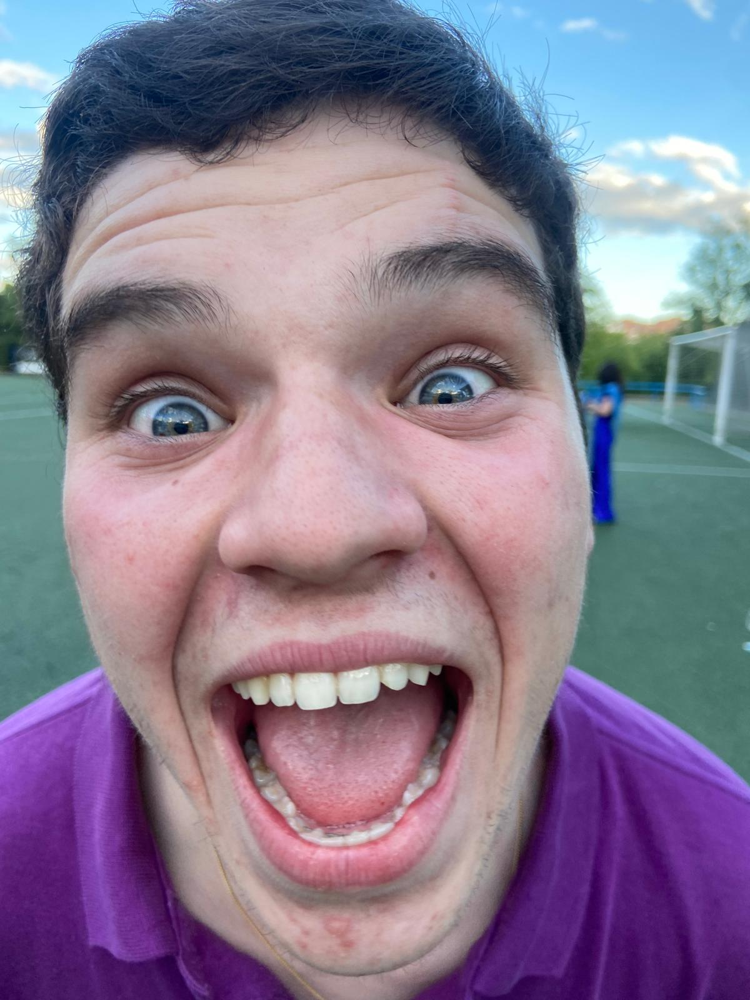
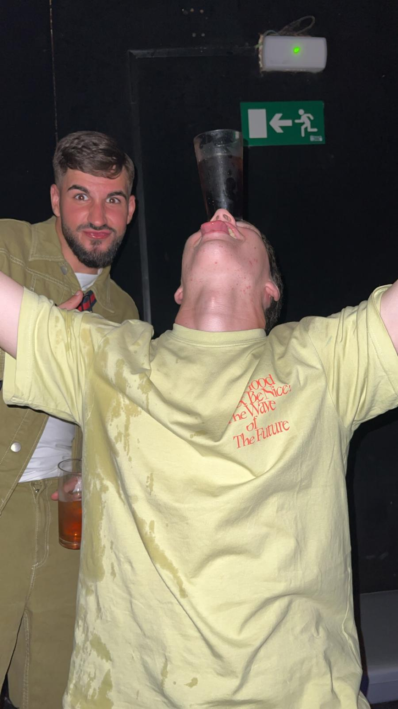
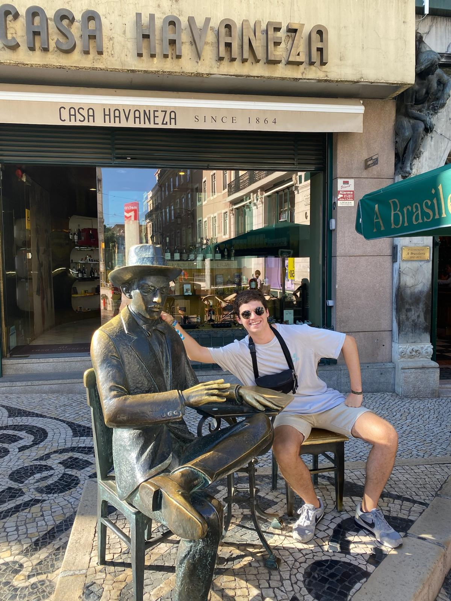
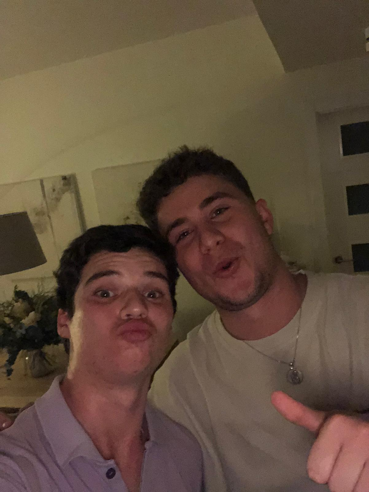
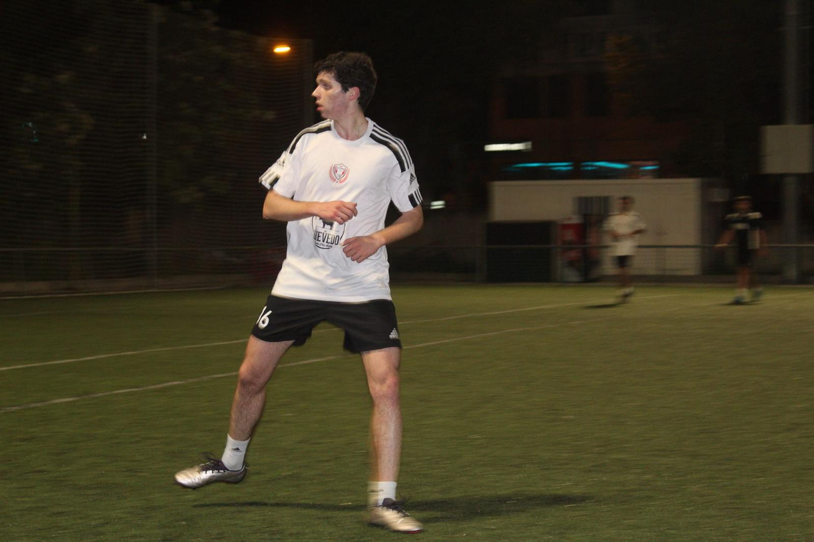
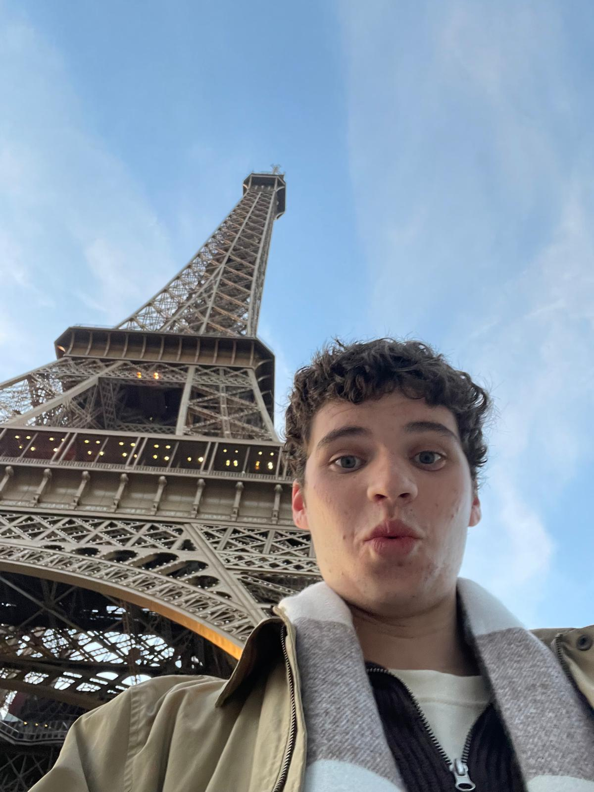
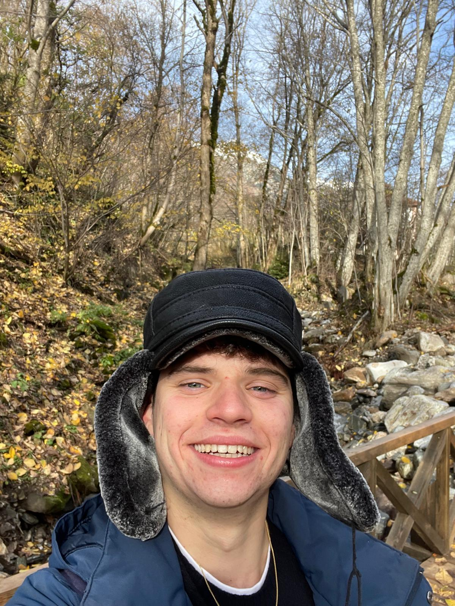
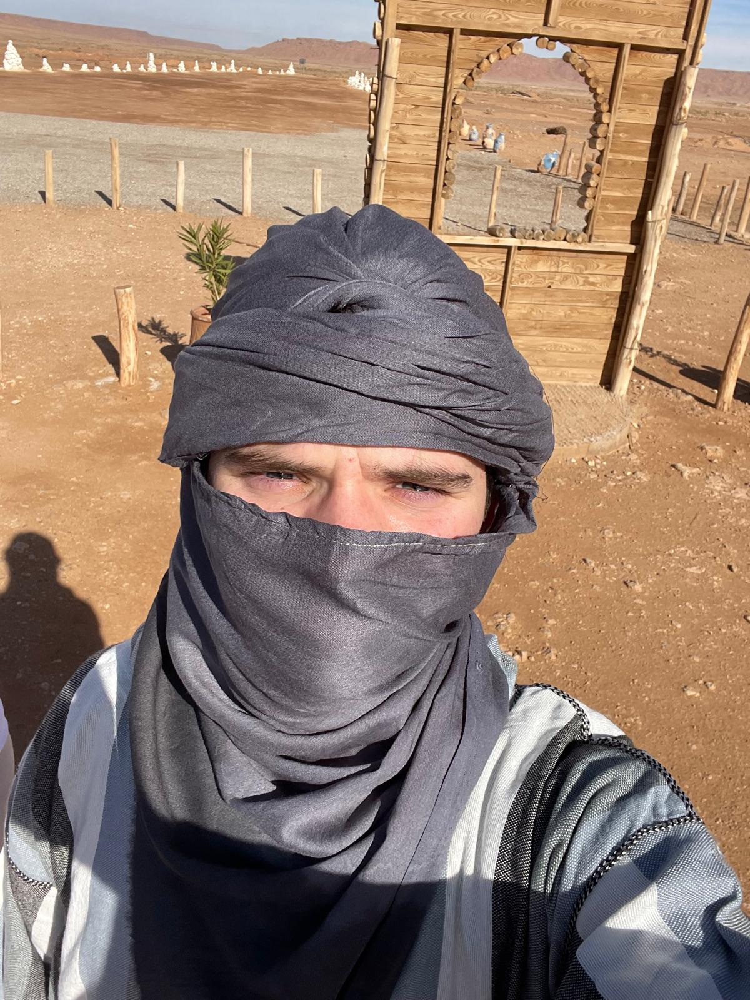
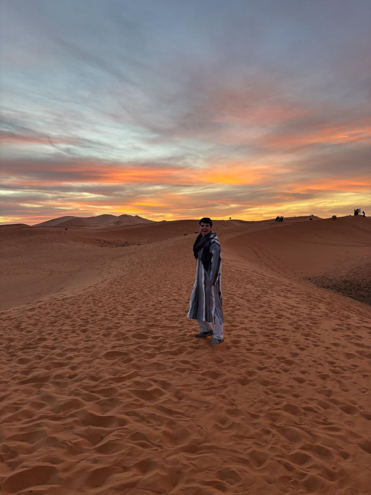
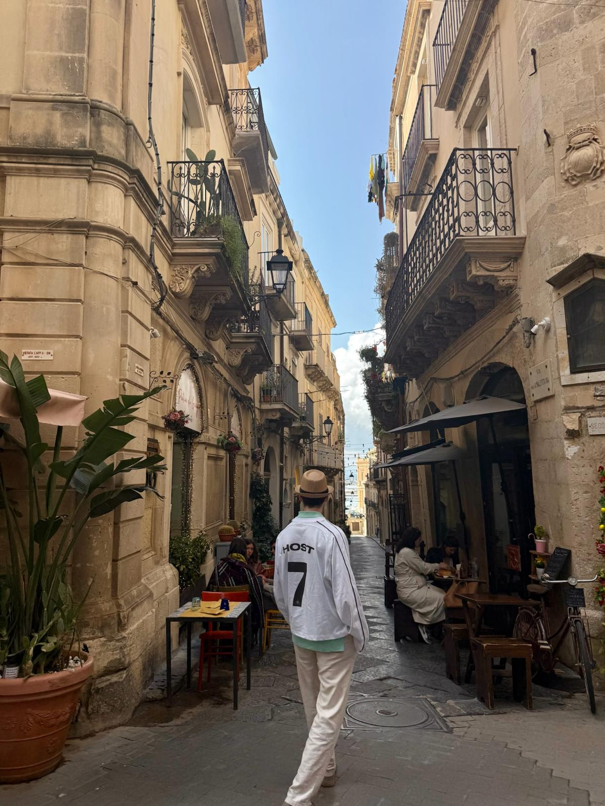
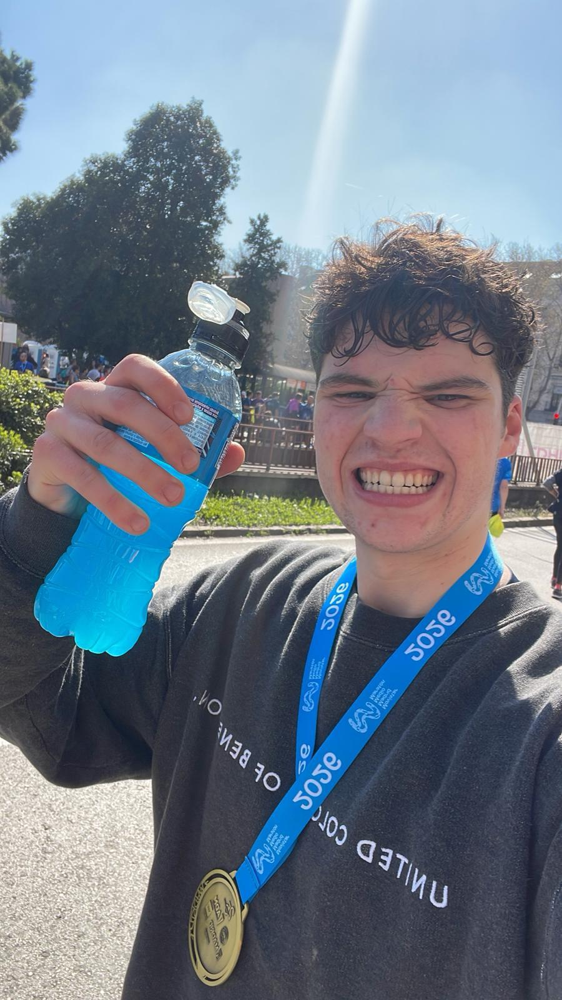